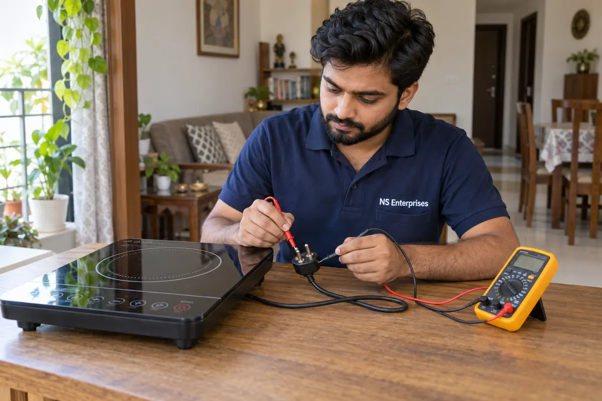

Induction stove not turning on
Checks include the power cord, fuse, internal power supply and control board.
Induction stove not heating, showing an error code or switching off by itself? Tell us the model and the code and book a doorstep visit.

Help for induction cooktop power, heating and display problems.
Checks include the power cord, fuse, internal power supply and control board.
The cookware may not be induction-compatible; otherwise the coil, power transistor (IGBT) or a sensor may be at fault.
Codes such as E0 or E1 have different meanings on each brand. Note the exact code and model before you book.
Moisture, heat damage or a loose display connector can stop the keys responding.
Blocked vents, a failed cooling fan or a faulty temperature sensor can trip the safety cut-off.
Beeping often means the cooktop does not detect a suitable pan or has sensed a fault.
The final scope and price are confirmed after inspection.
Fuse, IGBT, capacitor, diode bridge, wiring and control board faults.
Coil, thermistor, temperature sensor and cooling fan checks.
Touch key faults and induction glass replacement, subject to the correct glass for your model.
We are an independent repair service. Brand names only identify your appliance.
Share the Prestige model and the exact code or symptom, such as not heating or beeping.
Looking for a Pigeon induction service center? We are an independent repair option. Send the rating-label photo to check parts.
Tell us if it stops after a fixed time; that often points to the fan or a sensor.
We help with induction cooktop and induction stove repair for brands including Prestige, Faber, Glen, Sunflame, Bosch and Kaff. Share the rating-label details from the base when you book.
Requests accepted for Prestige, Pigeon, Philips, Bajaj, Usha, Havells, V-Guard, Preethi, Butterfly, Faber, Bosch and Kaff, subject to model and parts.
Ns Enterprises is based in Paigah Housing Colony, Begumpet, close to Paradise in Secunderabad. Find your area: Begumpet & Ameerpet, Secunderabad, Malkajgiri & ECIL, Uppal & Tarnaka, LB Nagar & Dilsukhnagar, Kukatpally & Miyapur, Gachibowli & Madhapur. Call 94939 84204 to confirm a visit to your address.
Tell us the appliance, the issue and your location. The visit charge is ₹350. Approve any repair or part only after you understand the quote.
Share symptoms, any error code and the brand and model if known.
Ask about inspection, parts and labour before proceeding.
Continue to the booking form to add your address. Today and the earliest slot are already selected.
On many models E0 means no pan or an unsuitable pan is detected, but meanings differ by brand. Try a flat induction-base vessel; if the code stays, book an inspection.
Overheating is a common reason: blocked vents, a weak fan or a sensor fault. Let it cool with the vents clear, and have it checked if it happens again.
No. Unplug it and do not use it, because liquid can reach live parts. Share a photo on WhatsApp and we will tell you whether we can help with your model.
The visit charge is ₹350. Parts and labour are quoted after inspection, before repair.
They depend on the brand. Commonly they relate to pan detection, voltage or a sensor, so check the manual and share the model with the code.
We list induction stove service in Hyderabad and Secunderabad. WhatsApp a photo of the label and your locality.